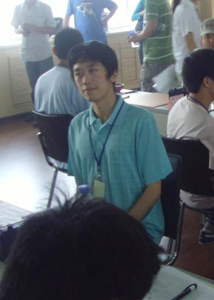

梅凡2008年第二届全团赛回顾：决战端午
#1 梅凡2008年第二届全团赛回顾：决战端午作者：米兰 发表时间：2008-6-24 15:03:30
【有志注：梅凡(网名：米兰)，2008年第二届全国五子棋团体赛代表河南队参赛】

6月8日，端午节
躺在床上，桌上摆着香喷喷的粽子，而我却一点食欲都没有.
全团赛的第二天已经结束了。比赛也进入了尾声。由于上一轮意外逼和了强大的上海一队，明天最后一轮我们将对安徽，如果获胜，将肯定能杀入前五，实现赛前制定的目标。虽然对手不是一流的队伍，但我却一点不敢麻痹大意，对江苏一队的溃败就是前车之鉴。我给堇色安排了一个斜月的变化，纳蓝还是瑞星，至于狐狸哥，因为对手开局，我对他也很放心，就没交代什么。临睡前给大家鼓了鼓劲，让大伙早点休息，睡个安稳觉。但躺到床上，内心却隐隐有点忐忑不安，闭上眼怎么也睡不着，就这样迷迷糊糊的，思绪飞回到了3天之前的火车上。
6月6日
郑州开往石家庄的火车。
刚一上车，感觉车厢里人塞的满满的，几乎透不过气来，直到车开了好一会儿，路过黄河大桥时，才感觉眼前赫然开朗，望着黄河水从脚下奔流而过，心情顿时舒畅了许多。在比赛之前，我们准备了大约一周的时间，主要是调整生物钟，适应比赛的节奏。去年因为睡眠不好犯下的种种低级失误至今还历历在目（包括俺那个经典的白六-_-）。也实战演习了几把。总的来说感觉还不错，对完成保八争六的既定目标也有一定的信心，当然关键还在于我们多了一个秘密武器——就是我们的一台狐狸。因为别人对他不熟悉。很可能就被认为是我们用来当炮灰使的。实际上他下棋的年头可不少了，早被誉为河南第一高手，只是一直没有露面而已。果然在后面的比赛中，有好几个对手都因为小看狐狸而吃了大亏，当然，这都是后话。
却说经过四个多小时长途跋涉，终于到了石家庄。由于在比赛之前就打听好了线路，所以我们下车就直奔公交车站，而没有打车。事实证明这个准备工作做的不错，后来我问过几个朋友打车过去的价格，从30块到50快，各种版本都有，不禁感叹开出租和下棋一样，也是有套路的。
到了宾馆，小歇了片刻，看到离吃饭还有点时间，我便出来串门。先开始进的大鱼房间，一干人等在里面一边扎金花，一边喷云吐雾，不一会我便给熏出去了。又跑到丸子他们房间，一进门刚想打招呼，却不由得楞了一下：只见里面两个丸子，长的一模一样，一个站着一个坐着，都在朝我笑。我一下傻了眼，问狮子哪个是真丸子，她只是笑着抿嘴也不说话。弄了半天我才分清，稍胖点的是丸子，另一个则是奚志杨，他们安排在同一个队，倒还真有点迷惑对手的意思。
又闲聊了一会儿，堇色他们喊我一起去吃晚饭。由于可可哥他们去开会，我们决定就近找个餐馆吃饭。走到宾馆服务员告诉我们的“一条街的餐馆”地方一看。果然是一字排开，只不过全是钉子户，大红的拆字触目惊心，令人不禁出了几滴冷汗。不过既来之则安之，周围都是工厂开发区，其他地方就算有幸存的恐怕也好不到哪去。于是我们找了个拆字最大的，点了几份烧烤和炒饼。一边等一边讨论明天的对阵，据前方传来的消息，根据编号次序，我们很可能对上北京四队。
他们队都有谁呢？我一边回忆，一边嚼着刚烤好的板筋，忽然觉的不大对劲，怎么嚼着这么费劲呢，一问老板，原来是煮过之后再烤的，我靠这也太有石家庄特色了，本来板筋就没什么味道，再这么一煮，就变成面筋了，又嚼了几口，实在觉的太鸡肋了。干脆一心一意等炒饼吃得了，我想你总不能把饼煮了再炒吧？
吃完饭去赛场溜达了会，得知果然是对北京四，他们队貌似不是很强，最有名气的还是我对的田汉法。回去后我们开了会，做了少许安排便休息了，毕竟后面几天会很辛苦，蓄精养锐还是最重要的。不过虽这么说，这么早躺在床上，我还是睡不着，心里嘀咕着：6月6号……一行6人……房间号402加起来6……-_-突然想起去年那个宿命的6来，又进入这个魔咒了？哎呀我什么时候变得迷信了……我一边这样胡思乱想着，一边缓缓地进入了梦乡。
6月7日首日比赛
一大早被敲门声吵醒时，我还睡得稀里糊涂的，坐起来眯着眼睛一看，6点半，大声答了一句：起来了！然后就又倒
#2 Re:梅凡2008年第二届全团赛回顾：决战端午作者：浪人痴痴 发表时间：2008-6-28 17:23:46
兰兰，。的照片好可爱啊。。。。。
我顶。
我挺。
哈哈。黄瓜留言！
#3 Re:梅凡2008年第二届全团赛回顾：决战端午作者：17号蓝星仔 发表时间：2008-6-28 23:50:19
 他挺幽默哦
他挺幽默哦
#4 Re:梅凡2008年第二届全团赛回顾：决战端午作者：蝶影随风 发表时间：2008-12-15 12:54:31
祝贺米兰,这次全国赛又拿了个第一.
太厉害了,
偶像
#5 Re:梅凡2008年第二届全团赛回顾：决战端午作者：如霜 发表时间：2010-8-22 23:53:18
怎么看着看着文章没有了呢［ 有志青年 于 2010-8-23 7:01:38 时奖励此帖[金币加 20 威望加1］